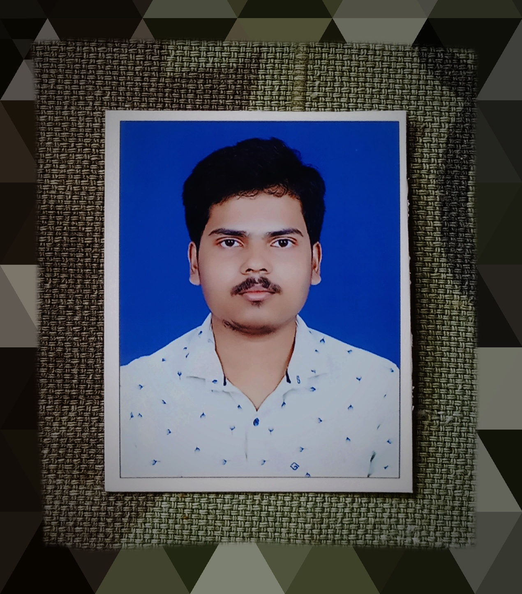

Aspiring Software Engineer with excellent problem-solving skills, loves to work in teams, and is passionate about coding.
Implemented a base paper on trajectory prediction for autonomous vehicles using LSTM on the NGSIM dataset, achieving good accuracy in predicting lateral position and longitudinal velocity. Conducted a literature survey on trajectory prediction methods for autonomous vehicles, including LSTM, GNN, GAN, Transformer-based, and Attention Mechanism as part of summer practical training.
Performed comprehensive EDA on UCI HAR dataset, revealing balanced data and distinct activity separation using count plots and t-SNE clustering. Developed and evaluated ML models (Logistic Regression, Linear SVC, RBF SVM, Decision Tree, Random Forest), achieving good accuracy with Linear SVC through hyperparameter tuning. Implemented LSTM-based deep learning models on raw time series data, achieving very good accuracy and demonstrating LSTM effectiveness for time series classification.
Email: satyaranjanpatra232is029@nitk.edu.in
Mobile No: 9348183973